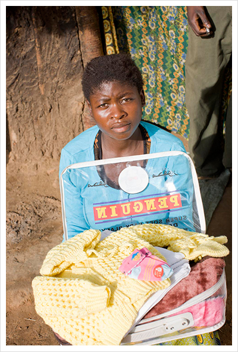
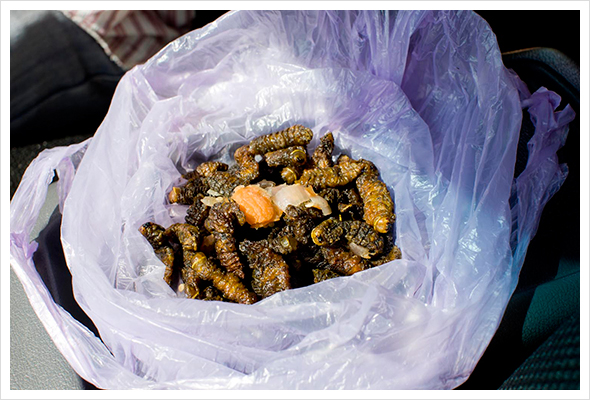
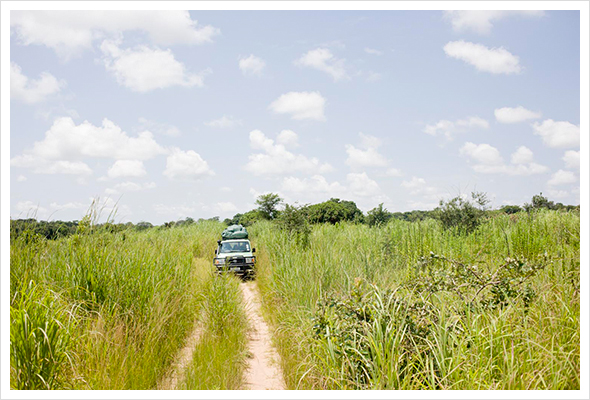
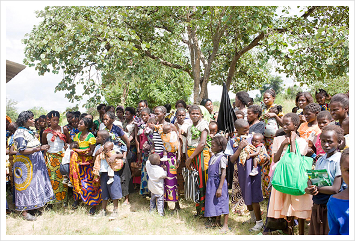
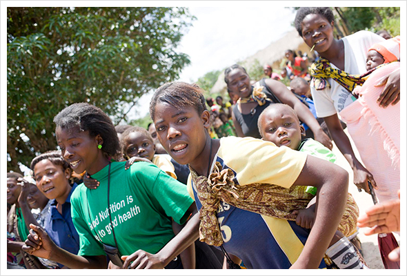
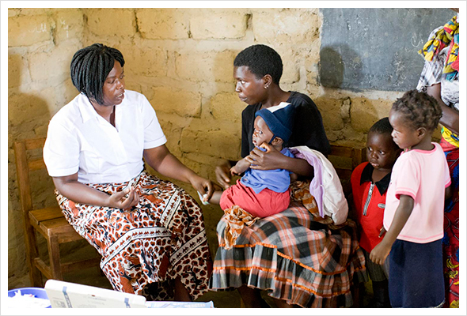
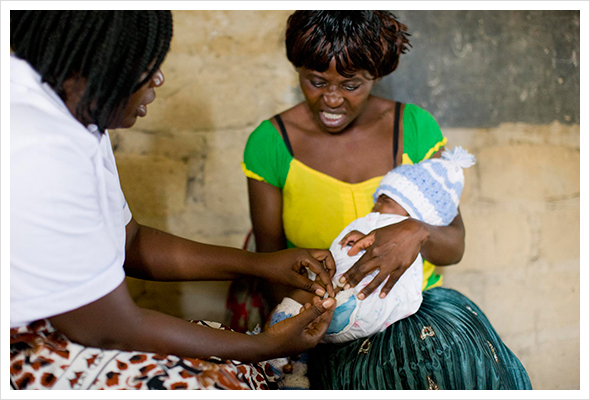
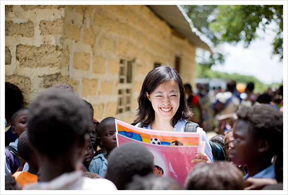
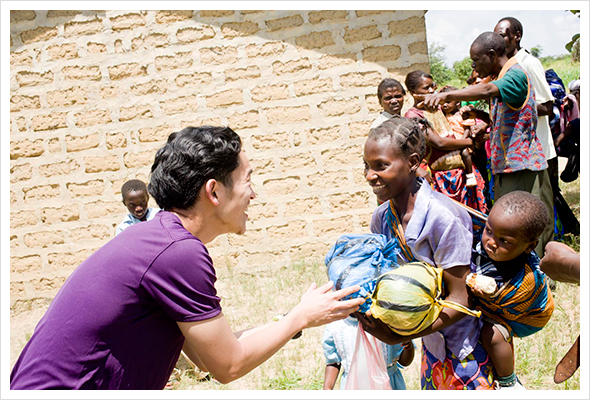
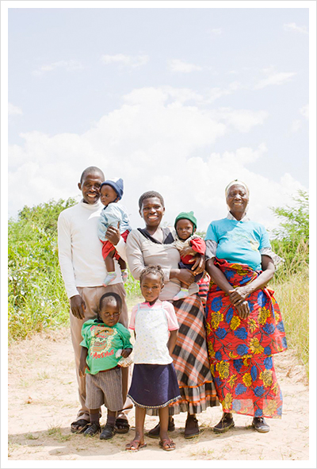

- 
- 21.
- 赤ちゃんのために揃えた産着とブランケット。子どもを待つ親の気持ちはどこでも同じ。この赤道に近いザンビアでなぜニットのセーターと帽子が必要なの？と思うところだが、実は、マラリア蚊の予防と体温調整が難しい乳幼児のことを考えてのことだという。ザンビアでは一般的に乳幼児には、夏でもこのニットのセーターと帽子を着せているという。まさに子どもの身を守るために、服は非常に重要な役割を果たす。
- 
- 22.
- ところでザンビアの人たちが好んで食べているものは？移動途中にドライバーが見せてくれた食用の芋虫（と思われる虫）。揚げてあるみたいで、こちらでは一般的な食べ方らしい。おいしそうに食べていたが、残念ながら、味見をする勇気がでない。
- 
- 23.
- 巡回クリニックの開かれる集会所に向かう。フィアレ診療所からさらに遠い場所に住む妊産婦や子どもを診察するために、月１回の移動クリニックが行われている。えんえんと変わらない景色の中を、ひたすらに4WDの車で走っていると、アフリカの広大さを皮膚感覚で感じさせられる。この距離をわざわざ歩いて、診療所へ行く。医療の大切さを知らなければ、誰も行こうと思わないだろう、というのが実感でわかる。口でどんなに医療の重要性を説明されたって、あまりの遠さと面倒に、挫折するかもしれない。
- 
- 24.
- そこで服が登場する。服もらえるんだって、ついでに診察とやらもできるらしいよ、から、始まる一歩。服が手に入る、ということが、ここで大きな役割を果たす。お母さんたちが大きなおなかを抱えて一生懸命に歩く、楽しい理由になれる。あるいは旦那さんが絶対的な権力を持つ家父長制の中で（そこもかつての日本と同じ）、立場の弱い奥さんがじゃあ、行ってきなよ、と送り出してもらえる理由になれる。一旦、診療所にきてもらえれば、助産師さんが診療の大切さを伝えることができる。でも、そこにつなぐまでの大切なツールに、提供した服がなる。
巡回クリニックに到着したら、大勢の人が集まっていてくれた。
- 
- 25.
- おしゃれ率高し！
たくさんの人がよそいきの格好をして、歓迎してくれた。
子どもを抱えながらのエネルギーに満ちた力強い踊りと歌に圧倒される。
- 
- 26.
- 五種混合の予防接種とポリオワクチン接種が行われた。この診療を受けた人が服をもらうことができる。母も子供もセレモニー用のよそいきの服のまま。この日が特別な日だったんだな、と改めて思う。
- 
- 27.
- 注射を受けている子どもよりも、お母さんのほうが痛そう！
- 
- 28.
- その間、長谷さんとシェルバさんは持参した紙芝居をベンパ語で読み聞かせ。子どもたちは、発音の間違いを指摘しながら、わきあいあいと楽しそう。この紙芝居はユニクロがバングラデシュでも使っていて、服が衛生面でも大切だということを楽しく説明しているもの。ザンビアでの死因の大きな一因であるマラリアの対策にも大切な情報。
- 
- 29.
- 衣服を受け取る人々。みんなホントに嬉しそう。家族単位で大人用、子供用の２袋を配布。日本で自分の服を洗濯し、ユニクロに持ってきてくれた人たちの気持ち、日本からザンビアまで運ぶことを手伝ってくれた人たちの気持ちがつまった袋。それを日本から来た人が、手渡しで渡すことで気持ちをより伝えることができる。受け取った側の気持ちもより強く感じることができる。衣服を通して、お互いがハッピーになれた瞬間。
- 
- 30.
- 新しく手に入れた服を家族でさっそく身にまとって。服が気に入った様子で、ニコニコしてくれた。